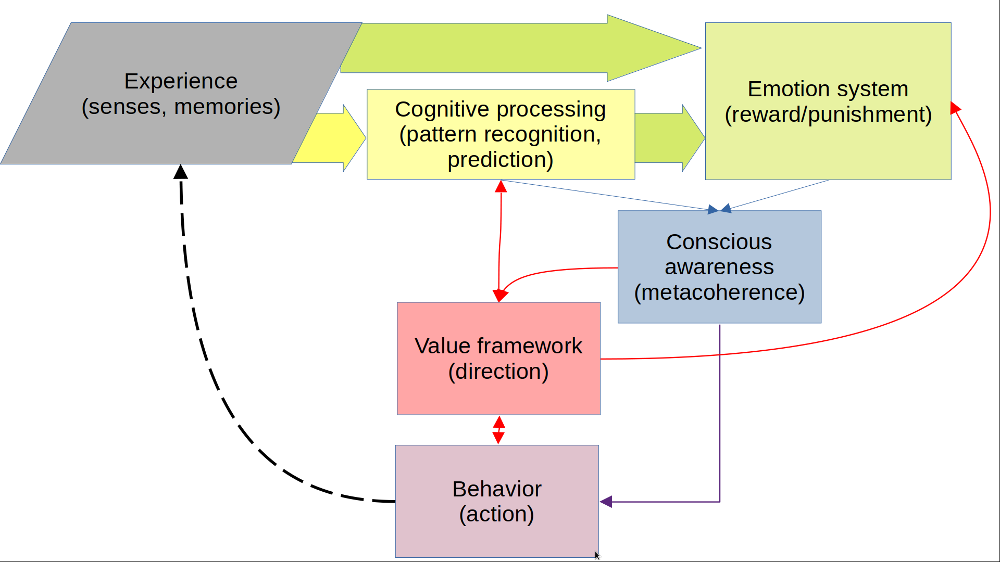

8. Conversations with the machine (1 June 2025)¶
8.1. How the different concepts that appeared in the filocafe (30/06/2025) are linked?¶
I tried to build a model that connects in a meaninful manner the concepts that appeared in the last PhiloCafé
{kind=link}
8.1.1. Terms (physical analogy)¶
Experience (input signal)
Cognitive Processing, reasoning, reflection (filter/transformer)
Emotion System, responses, motivations (energy feedback)
Value Framework (potential field, orientation system) -Purpose (applied gradient, current direction of movement)
Meaning, conscious Awareness, meta-awareness (observer/controller)
Behavior, actions (final trajectory)
We can review the IO of each system:
Experience, feeds the system with “what’s happening”
Input:
External world: sensory data, social interactions, events
Internal signals: body states, memories, thoughts
Output:
Raw information to Cognitive Processing
Affective signals to Emotion System
Cognitive Processing, generates narratives, understanding, and judgments
Input:
Raw experiences
Emotional feedback
Purpose (to evaluate importance)
Conscious Awareness (when you intentionally focus on part of that experience or on internal thoughts)
Output:
Interpreted meaning
Predictions and decisions
Updates to beliefs
Structured content for Conscious Awareness
Signals to Behavior (intentions)
Emotion System
Input:
Processed experience (appraisal from cognition)
Direct sensory input (e.g., fear before thought; unconscious routes not displayed)
Value Framework (emotion salience is value-weighted)
Output:
Affective states (joy, fear, etc.)
Motivational impulses (approach/avoid)
Biases or constraints for Cognitive Processing (e.g., urgency, framing, focus narrowing)
Energy or inertia for Behavior
Value Framework. Acts like a compass, doesn’t act directly, but orients the system.
Input:
Memory (Cultural/social context, past experiences)
Emotional salience
Refined by Conscious Awareness
Output:
Prioritization of goals and actions
Direction to Cognitive Processing (what matters)
Modulation of Emotion System (emotional weight)
Shaping of Purpose
Conscious Awareness. Acts like a control tower or observer, enabling reconfiguration.
Input:
Thoughts from Cognitive Processing
Emotions
Feedback from behavior and the environment
Detections of dissonance or incongruence between beliefs, values, and actions
Output:
Metacognitive adjustments (e.g., reconsider goals)
Re-alignment of Values, Purpose, or Behavior
Self-narratives, insight
Intentional modulation of any other block
Behavior
Input:
Intentions from Cognitive Processing
Impulses from Emotion System
Learned habits (automatic)
Filtering/modification via Conscious Awareness
Output:
Observable actions in the world
Consequences become new Experience
Social and personal feedback (affect Emotion and Values)
8.1.2. Role of time¶
Value Framework sets long-term priorities; Emotions provide moment-to-moment feedback based on those priorities: value framework could be the thermostat, while emotions could be the thermometer
Behavior can reinforce, challenge, or transform the Value Framework over time. Slow loop, but critical: behavior informs identity, and identity shapes values. Also, conscious Awareness often mediates this loop, you notice your actions, reflect, and then potentially shift your internal framework.
8.1.3. Summary¶
Simple diagram: Experience - Cognitive/Emotional - Value/Awareness - Behavior - Feedback
Cognitive processes drive both purpose (direction) and meaning (coherence)
Emotional system evaluates behavior through reward signals (like happiness)
Meaning emerges from aligning purpose, happiness, and coherence over time
Meaning emerges from the alignment of purpose (direction), emotional system (reward signals), and awareness over time
Behavior loops back into new experiences—continually reshaping the system
Intentions are partly cognitive (planning, deciding, projecting) partly emotional (care), filtered by values
8.1.4. Bibliography¶
Free Energy Principle (Friston). Organisms resist disorder by building internal models that minimize prediction error (“free energy”). Perception, action, and learning are all in service of this.
Friston, K. (2010). The free-energy principle: a unified brain theory? Nature Reviews Neuroscience, 11(2), 127–138
Parr, T., & Friston, K. (2019). Generalised free energy and active inference. Biological Cybernetics, 113(5), 495–513
Theory of Emotion (Scherer, Lazarus)
Lazarus, R. S. (1991). Emotion and Adaptation
Scherer, K. R. (2005). What are emotions? And how can they be measured? Social Science Information, 44(4), 695–729
Global Workspace Theory (Baars, Dehaene). Consciousness is the broadcasting of selected information globally across the brain.
Baars, B. J. (1988). A Cognitive Theory of Consciousness.
Dehaene, S., & Naccache, L. (2001). Towards a cognitive neuroscience of consciousness: basic evidence and a workspace framework. Cognition, 79(1–2), 1–37
Cybernetic Models & Control Theory. Behavior and cognition are guided by feedback loops toward goals.
Powers, W. T. (1973). Behavior: The Control of Perception.
Ashby, W. R. (1956). An Introduction to Cybernetics
Self-Determination Theory (Deci & Ryan)
Deci, E. L., & Ryan, R. M. (2000). The “what” and “why” of goal pursuits: Human needs and the self-determination of behavior. Psychological Inquiry, 11(4), 227–268
Predictive Coding / Bayesian Brain (Clark, Hohwy, Friston). The brain constantly updates beliefs using Bayes’ rule: what do I expect vs what did I get?
Clark, A. (2013). Whatever next? Predictive brains, situated agents, and the future of cognitive science. Behavioral and Brain Sciences, 36(3), 181–204.
Hohwy, J. (2013). The Predictive Mind.
Constructivist Theories of Emotion & Meaning (Lisa Feldman Barrett). Emotions are dynamically constructed, not just automatic responses, but tied to meaning and concepts.
Barrett, L. F. (2017). How Emotions Are Made: The Secret Life of the Brain.